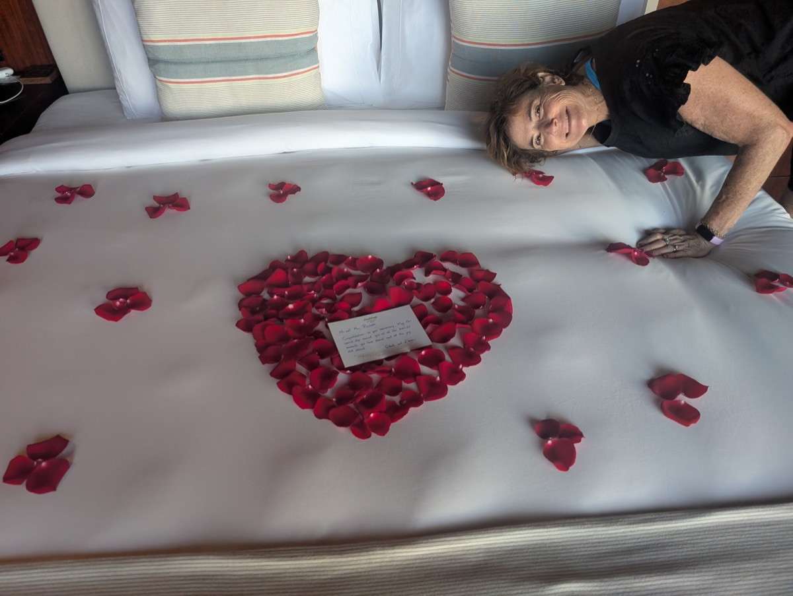
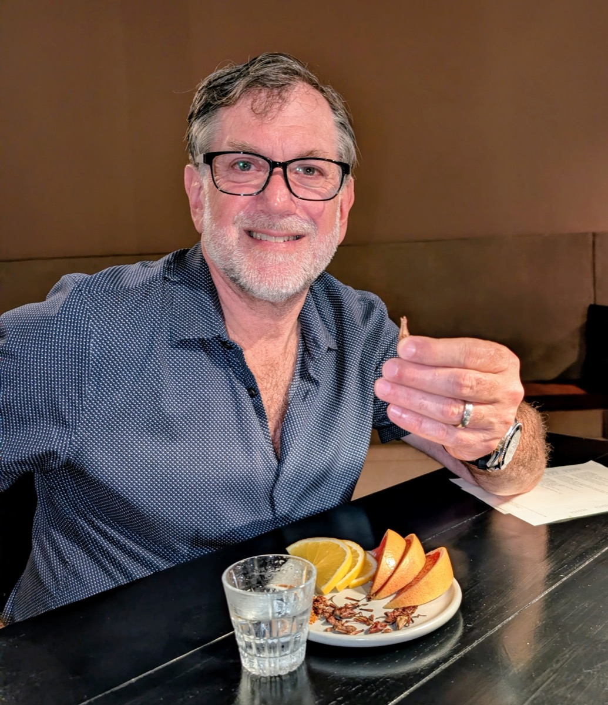
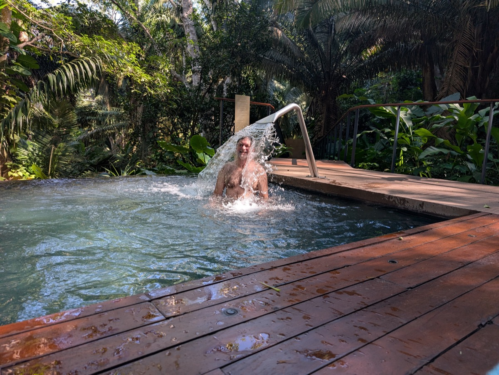
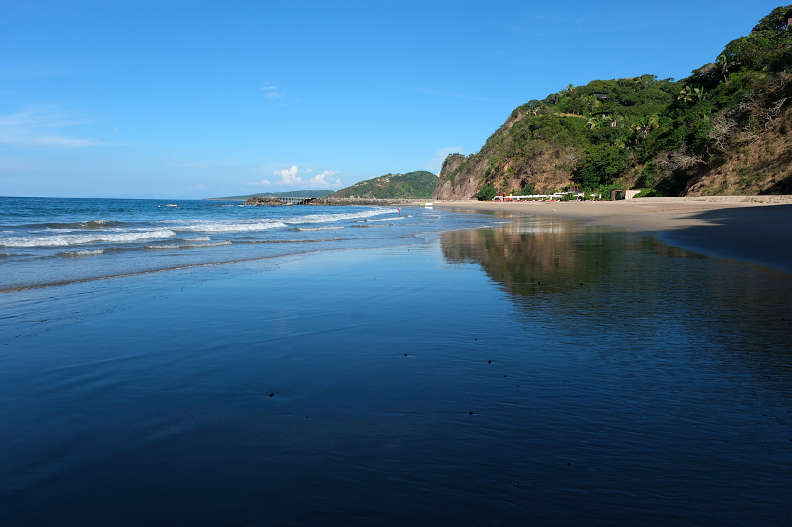
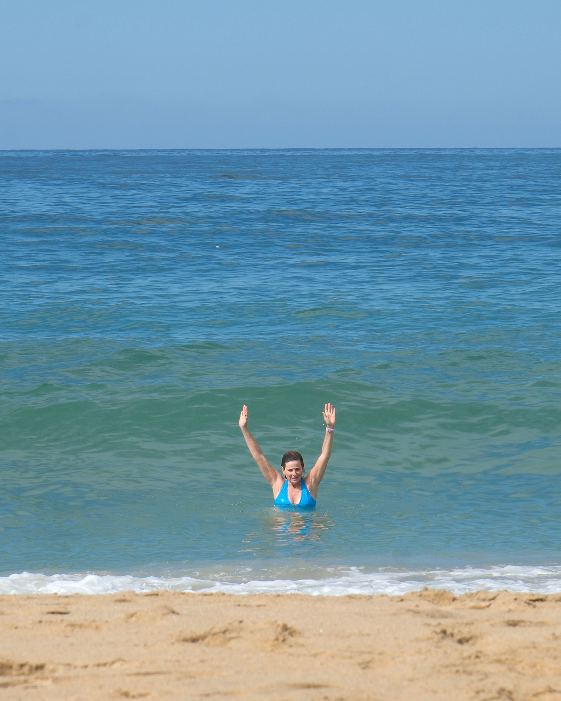

We arrived in Puerto Vallarta on a Friday evening, rented a car, and hit the road for “The One and Only” resort, a little over an hour to the north. After a slow start through traffic, we were happy to reach an expressway and make fast progress towards our destination. But when we got to our exit, we learned we had been on a toll road. A toll was due. It was payable only in Pesos, in cash. And we had not yet gone to an ATM!
Luckily, Audrey’s spanish skills helped us out and we were able to change some dollars for pesos with a toll operator–and didn’t spend our vacation filling potholes in the freeway to pay our debt. The rest of the trip was supremely relaxing!

We shared that we were celebrating our anniversary. Yes, a bit early. But a great place to celebrate. The hotel shared their enthusiasm by decorating our bed in rose petals.

I enjoyed sampling the Mezcal. And here it was served with a side of crickets! I found them to be salty and crunchy. In general, one of the delights was that the restaurants at the resort were extremely accommodating with respect to providing gluten-free food, and we ate really well.

One day, Audrey had a wonderful spa treatment. I wandered over to await her blissful return, and found a delightful pool hidden in the rainforest, with this special backwasher.

We spent most our time at this peaceful beach, lounging in the shade and reading books. There was some good snorkling at the jetty. I enjoyed paddling the kayaks and trying the paddleboard.


The nearby village of San Pancho was very colorful. We enjoyed strolling the cobblestone streets and checking out the very long and wide beach. Apparently San Pancho is where old VW buses and bugs go to retire.

Taking a dip in the warm waves felt great! And the sunsets were magnificent.